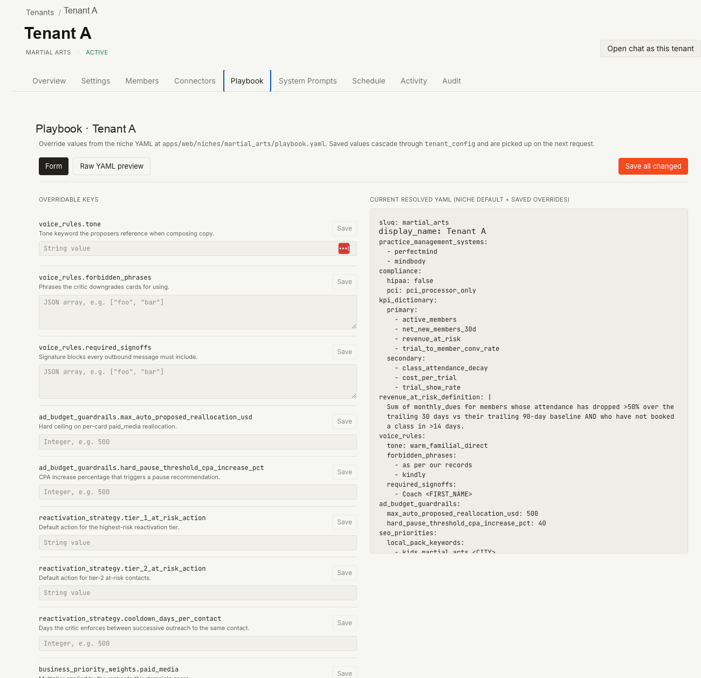

Operator console
Tenant management, connectors, services, team invites, cost, audit, schedules, playbooks and system prompts. Admin-gated and separate from the client-facing surface.
- /operator
- admin-gated
theSide.io Intelligence Platform · architecture atlas
The readers here are the clinic owner and the Side operator who runs her account. The platform turns that business's own advertising, booking and search data into a short list of proposed actions to approve or reject. Approved actions run against the vendor APIs behind an idempotency claim and a signed audit row. Seven, fourteen and twenty-eight days later the platform records what each one changed, and writes that back as memory the next run reads. It is built and tested; it has not yet run against a client account.
Each night the platform reviews a client's data and proposes actions. A critic removes the weak and unsafe ones. A ranker orders what survives, with no model call. An operator approves. Approved work executes, the result is measured across three windows, and the measurement becomes durable memory that changes the next run.
tenant_idapp/api01 · System map
Inputs and operators enter on the left, the runtime sits in the middle, and decisions flow out to cards, connectors, actions and memory.
Tenant management, connectors, services, team invites, cost, audit, schedules, playbooks and system prompts. Admin-gated and separate from the client-facing surface.
Pulse, the recommendation approval queue, the supervisor chat, onboarding and an embeddable tenant route.
Webhooks feed tenant state and audit. Signatures are verified with a constant-time comparison, and events from an unknown tenant are quarantined.
Eight registered tasks: nightly intelligence at 03:00, outcome attribution at 04:00, weekly memory consolidation, connector health probes, metric materialization and a cron dispatcher.
Shared lifecycle wrapper for every agent run: start, finish, token usage, budget checks, audit envelopes and an abort tree. Each run declares a mode such as proposer.paid_media or supervisor.chat.
One matrix decides what a client buys from Side and how far the agents may act. Each tier carries its own approval default, cost cap and cadence.
Specialists propose structured cards through a forced tool call. The critic downgrades or kills. The ranker scores what survives with arithmetic only.
Tools, tool search, the permission rule language, hooks, skills and memory are modular interfaces over the same runtime.
Cards land in the approval queue, pass the permission lattice, then become executed actions or work handed back to a human.
Tenant and agency credentials resolve to real vendor clients, health badges, synthetic fallback and per-tenant grants.
The single durable substrate: tenants, cards, actions, outcomes, the audit chain, connector health, memory, services and comms.
Outcome attribution writes memory. Future prompts retrieve the relevant lessons per tenant and per domain, bucketed by kind.
02 · Runtime loop
Each scheduled run, manual specialist run and supervisor investigation follows the same nine steps: context in, structured cards out, approved execution, measured result, memory update.
Nightly cron, a manual specialist run from the tenant page, supervisor chat, or a webhook.
Organization and route context resolve to tenant_id, niche_id, the service matrix and the playbook.
Metrics, recent outcomes, connector status, active services and the memory kinds that domain reads.
The specialist makes one model call with submit_recommendations forced as the only allowed output.
A deterministic policy pass and a model pass. The policy can kill; the model can only lower confidence.
Arithmetic on lift, confidence, novelty and business priority. No model call in this step.
Service tier, operator rules, hook decisions and the human queue settle GREEN, YELLOW or RED.
An idempotency claim, a vendor call or a deferred hand-back, a signed audit row, then post-action hooks.
Attribution writes an outcomes row per window, emits a hook, and produces tenant memory for future runs.
03 · Worked example
A single card, from the cron that woke the run to the memory row it left behind. Every identifier, threshold and table name below is taken from the code. The clock times and the specific numbers are illustrative, and are labelled where they appear.
Illustrative values. Timestamps, the ad set identifier, the predicted magnitude and the measured lift are illustrative. The field names, enum values, thresholds, table names and control flow are taken from the code and the test fixtures.
The nightly_intelligence_run task fires on cron 0 3 * * *,
selects tenants whose status is active, and walks four domains in a
fixed order: paid_media, sales, seo,
project_management. It opens a task envelope, which writes an audit row
with actor task:nightly_intelligence_run and action
task.started. The envelope closes as completed or
failed, so an empty result and a run that never started are
distinguishable in the log.
The run resolves tenant_id and niche_id, then loads the
playbook: the niche YAML merged with any per-tenant overrides saved in
tenant_config. That merged document carries the values the agents obey,
including voice_rules.forbidden_phrases,
ad_budget_guardrails.max_auto_proposed_reallocation_usd,
ad_budget_guardrails.hard_pause_threshold_cpa_increase_pct,
reactivation_strategy.cooldown_days_per_contact and
business_priority_weights. The Operator surface section below shows this
editor.
The paid-media specialist assembles ad metrics, the tenant's recent
outcomes, connector status and the active rows in
client_services. Memory is retrieved top-K per kind rather than top-K
overall, so a noisy kind cannot crowd out a rare one. For paid media the readable
kinds are priority_signal, seasonal_pattern,
kill_lesson, success_recipe,
monthly_budget_pace, attribution_quality_score,
client_objection, audit_fact and
compliance_observation. The identifiers of the memories used are kept on
the card in memory_refs, so the interface can answer why a card appeared.
One model call, with the tool call forced as the only way out. There is no
free-text parsing anywhere on this path, and a response without the tool block
raises ProposerResponseError instead of being salvaged.
tools: [submitRecommendationsTool],
tool_choice: {
type: "tool",
name: "submit_recommendations",
disable_parallel_tool_use: true,
}
The schema allows one to eight cards; the specialists ask for five. Each card must
carry action_type from a fixed enum of 19 values,
target_entity (kind, id, and an optional
platform of meta or google),
predicted_lift (metric, magnitude,
window), confidence between 0 and 1,
reasoning of at least 20 characters, and
required_approval of GREEN, YELLOW or
RED. The specialist prompt is explicit that it may not call vendor APIs
and may never recommend a delete.
This run's card (illustrative): action_type: "pause_ad",
target_entity: { kind: "ad_set", id: "…", platform: "meta" },
predicted_lift: { metric: "leads_per_week", magnitude: 22, window: "14d" },
confidence: 0.78.
The policy pass runs before any model sees the card. A cooldown collision, where the
same action_type against the same target was killed inside the tenant's
cooldown window, kills the card outright and sets
adjusted_confidence to 0. A phrase drawn from
voice_rules.forbidden_phrases costs 0.2. Two or more prior
negative-lift outcomes for that action type cost 0.15. If the platform's stored
attribution_quality_score is below 0.65 and the card's metric depends on
attribution, confidence is capped at 0.65 with a note naming the platform and the
score.
A model critic then returns decision,
adjusted_confidence and critic_notes through its own forced
tool call. The merge takes the lower confidence of the two, and a model verdict of
killed is demoted to downgraded. Only the deterministic
policy can end a card's life.
This run (illustrative): the stored attribution score for that
platform is 0.58, below the 0.65 threshold, and leads_per_week is
attribution-dependent. critic_decision becomes
downgraded and adjusted_confidence is capped at
0.65. A kill would have been written to the audit log as
card.killed_by_critic with actor system:critic.
The ranker is a synchronous pure function. It imports no model client, and its whole scoring surface is four numbers multiplied together.
score = lift * confidence * novelty * priority_weight
lift = sign(magnitude) * tanh(|magnitude| / 100)
confidence = critic.adjusted_confidence
novelty = 1.0 with no prior kills, 0.7 after one, 0.3 after three
priority_weight = playbook.business_priority_weights[domain]
defaults: paid_media 1.0, sales 0.9, seo 0.7
Killed cards are filtered out before scoring, the survivors are sorted descending,
and the top five persist. The row written to recommendation_cards
carries ranker_score, critic_decision,
critic_notes, adjusted_confidence, memory_refs
and status: "pending". A second audit row records the rank and the
breakdown, with actor system:ranker. Keeping this step out of the model
is deliberate: card order is the thing an operator sees first, and it should move only
when the inputs move.
An operator opens the queue and clicks approve. The route refuses any card whose
status is already something other than pending, returning 409, so a
double click cannot double-execute. Four inputs then settle the decision.
client_services. A tier of audit_only is a structural refusal that returns 403 even after a human click. A tier of advisory forces the human path and blocks auto-execution.tenant_config under scope approval parse into a small permission language. A deny rule outranks a human click by design. The rule is the operator's standing contract.PreActionExecute event fires and its outcomes are reduced most-restrictive first: deny beats ask, ask beats allow. A hook that allows does not auto-approve on its own; a matching auto-approve rule is also required, and platform auto-approval is off by default.
Before anything executes, the decision itself is written to audit_log as
card.approval_decision, with the deciding layer, the reason and the
matched rule in meta. A denial is as legible after the fact as an
approval.
The executor computes a stable token over canonical JSON, sorting object keys so the same logical action always produces the same token:
token = "ix_" + sha256(JSON.stringify({
tenant: tenantId,
card: cardId,
action: actionType,
target: canonicaliseTarget(targetEntity),
})).slice(0, 32)
That token is inserted into agent_action_idempotency_claims, whose
primary key is (tenant_id, token), with
ON CONFLICT DO NOTHING. The insert is the contest: exactly one caller
wins and proceeds to the vendor. A loser writes
card.duplicate_execution_skipped to the audit log with the original
claim's status and owner, and returns 409 without touching the connector. Claims are
later marked completed, failed or deferred,
and a failed claim is never retried automatically.
The winner dispatches on domain and then on action type. For
pause_ad on Meta the executor resolves the tenant's credential and sets
the ad set status to PAUSED; on Google it pauses the campaign. Many
action types are hand-backs by design: they raise a deferred error, the card
moves to approved instead of executed, and an
agent_actions row of type owner_approved_deferred records
the reason. The service tier is checked a second time inside the executor, so a card
approved through any path still cannot execute under audit_only.
On success, one database transaction does three things together: the card moves to
executed, an agent_actions row is written with the
idempotency token and outcome_pending = true, and
card.approved is appended to the tenant's audit chain. Each audit row
stores prev_hash and a signature computed as
sha256 over a fixed-order payload that includes the previous hash, with
the first row anchored to genesis. Every signed write takes
pg_advisory_xact_lock on a per-tenant key first, which makes two
concurrent writers forking the chain structurally impossible. The lock releases at
commit.
A daily job walks actions whose outcome_pending is still true and
attributes each of the three windows as it comes due. Each window writes one row to
outcomes with action_id, window_days,
metric_key, baseline, observed and
lift, under a unique index on
(action_id, window_days). The metric key is chosen by action type: a
pause is measured as ad_spend_daily_savings_usd, a budget change as
roas_change, an outbound message as reply_received. The pause in this example is therefore evaluated on spend savings. The outcome row records which metric was measured, so a spend-saving pause is never credited as a lead increase. The
baseline is the seven days before execution.
An action is marked attributed only once all three windows exist. Where there is no
data the metric key is unattributable_no_data and the row says so. No
zero is recorded. Each write emits the OutcomeRecorded hook
and its own audit row with actor
system:outcome_attribution. This is a before-and-after measurement on
the tenant's own account, with no holdout and no control group.
Every attributed action with data writes a priority_signal memory keyed
priority_signal:{domain}:{action_type} at confidence 0.55, carrying a
weight multiplier derived from the measured lift and clamped between 0.5 and 1.5.
That multiplier is exactly what the ranker's priority_weight term reads
on a later run, which is how a measured result changes tomorrow's card order.
A success_recipe is written only when the measured lift clears 25, keyed
success_recipe:{domain}:{action_type}:{action_id_prefix} at confidence
0.6, with a replayable summary and a reference back to the source card. Memory
confidence then decays as confidence *= 0.5 ^ (staleDays / halflife),
with a half-life set per kind: 28 days for a priority signal, 7 for an objection, 60
for voice calibration, and no decay at all for compliance observations and weekly
review notes. An operator can retire a memory as wrong, which drops its confidence
and records the override.
04 · Agent orchestration
Four specialists generate, a supervisor investigates on request, the critic judges, the ranker orders, and executors translate approved cards into vendor calls.
The largest delivery domain. Reads ad metrics, attribution quality, budget pace, platform context and service tier.
Turns CRM and main-contact signals into outreach cards while respecting voice, cadence and per-contact memory.
send_sms, send_email, reactivate_member, book_call.Local visibility, reviews, posts, content drafts, meta tags and structured-data proposals.
Cross-domain synthesis for weekly summaries, escalation, prioritization, client health and quarterly reviews.
summarize_week, escalate_to_owner, flag_for_review, prioritize_backlog.The interactive surface, with tenant-scoped tools, a registry, tool search, an abort tree and budget checks. A turn cap bounds every conversation.
The quality gate. The critic sees policy, prior outcomes and attribution quality. The ranker stays arithmetic so card order does not drift with the model.
05 · Memory and learning
Memory is what separates a recommendation queue from a system that improves. Every row is tenant-scoped, typed against its own schema, confidence-scored, retrievable and traceable back to the outcome that produced it.
Each kind has a value schema validated on every write, and a half-life used for
decay. Compliance observations and weekly review notes never decay. One is a
regulatory trail; the other is source material for a quarterly review. A daily
composite such as client_health_score has a one-day half-life.
memory_refs, so the interface can show which lessons produced a recommendation.06 · Connector fabric
The connector system is a platform layer of its own: registry metadata, credential schemas, agency grants, health probes and per-tenant badges that tell an operator whether a number came from a real account.
Nine providers carry client data. A tenth registry entry, Slack, exists for workspace notifications and does not read a client's marketing account. Each entry declares its auth kind, its editor shape and whether it has a synthetic fallback.
connector_health with last check, last success, last failure, 24-hour error rate, p95 latency and credential expiry.07 · Data architecture
Thirty-two tables. Everything that matters becomes a typed row: decisions, credentials, health, memory, actions, attribution, services and operator work.
08 · Safety and control
Every automation layer has a counterweight. This table names each one, how it is enforced, and what it protects.
tenant_id, and a subagent cannot widen that scope.audit_only tier refuses execution even after a human approval, and the check is repeated inside the executor so no path bypasses it.prev_hash and a SHA-256 signature, and a per-tenant advisory lock rules out chain forks. Any rewrite of history breaks the chain and shows up on verification.(tenant_id, token) stops a repeated approval or a retry storm from producing a second vendor call.09 · Operator surface
Two screens from the operator console, redacted: the tenant is shown as Tenant A. They carry the two claims this page rests on. Guardrails are configuration, and connector health is measured rather than asserted.


10 · Engineering patterns
Four patterns came from studying how Claude Code is built: a single engine kernel, a tool registry, permission rules, and hooks. Each was rebuilt for multi-tenant use, where the hard part is that one process serves many clients whose data must never meet.
| Pattern | Adaptation here | What it bought |
|---|---|---|
| Single engine kernel | QueryEngine plus a run wrapper, with a declared mode per run | Shared audit, usage, budget and state handling for every agent run. |
| Subagent isolation | A subagent context with an explicit tool, budget, abort and prompt-cache policy | A fork model that cannot widen tenant scope or exceed the parent's budget. |
| Tool registry and discovery | A builder, a per-run registry, tool search, and deferred skill invocation | Tools are catalogued and discoverable instead of pasted into prompts. |
| Permission composition | A rule language, a decision lattice, hook participation and a human queue | Trust can mature one tenant at a time without opening execution globally. |
| Hooks | Nine lifecycle events with http, prompt and audit-only runners | Operators extend behaviour at lifecycle boundaries without touching agent code. |
| Skills | Tenant and bundled skills with inline and fork modes | Runbooks become invokable procedures tied to allowed actions and approval tiers. |
| Memory tiers | Typed tenant memory with consolidation, per-kind decay, retirement and references | Outcomes and client conversations become durable inputs to later decisions. |
| Compaction and cost discipline | Tool-result budgets, token accounting, cost config and an abort tree | Long agent interactions stay bounded and accountable. |
| Failure-safe execution | The idempotency claim table, the signed audit chain and synthetic fallback | The system can retry and recover without duplicate or silent writes. |
11 · What runs today
The surfaces below are grouped by how far the platform may act on its own: built and tested, proposal-only by design, and drafts for a person to publish.
approved and an agent_actions row of type owner_approved_deferred records the reason.It is built and tested; it has not yet run against a client account.
normalizedLift reads predicted_lift.magnitude as improvement: a positive magnitude ranks higher, and the proposer's schema types it as a bare number. A metric where lower is better must arrive as a positive improvement figure for the ordering to hold. The worked example above uses a metric where up is good.
Searchable atlas
No section matches that term.
Soroush Seif · thesidebiz.github.io/soroush-portfolio · theside.studio · September 2026. Client identifiers are redacted throughout. Counts are from the repository as of September 2026. Side is the company I co-founded in Vancouver in 2021. Side Studios, its studio subsidiary, designs and runs client sites and agents (theside.studio). theSide.io is the intelligence platform we built for those clients. Nightshift is the console for our autonomous SEO and AI-visibility engine.